6 Generalized Linear Models (GLMs)
Outline of notes
- Logistic regression
- Odds
- Interpreting slope in logistic regression
- Poisson regression
- The structure of a GLM
- Maximum likelihood estimation, conceptually
- Poisson regression example
- Negative binomial regression
6.1 Logistic regression
All of the regression methods we’ve seen have involved models in which the response variable is normally distributed, given values for the predictor variables
In other words, the residuals have been modeled as normal.
What if we have a different kind of response variable? In particular, consider a binary response variable. Maybe the outcomes are “yes” and “no”, or “success” and “failure”, or “present” and “absent”.
Logistic regression is a type of “generalized linear model” (GLM) that works well for modeling binary outcome data.
Before we get into logistic regression, though, let’s see what happens if we use standard regression (sometimes called “ordinary least squares”, or OLS regression) with a binary response.
We’ll use simulated data corresponding to a study of sexual harassment reporting at a university. (Brooks and Perot “Reporting Sexual Harassment: Exploring a Predictive Model” (1991)).
Here is data on whether or not sexual harassment at a university was reported, using the offensiveness of the behavior as a predictor variable:
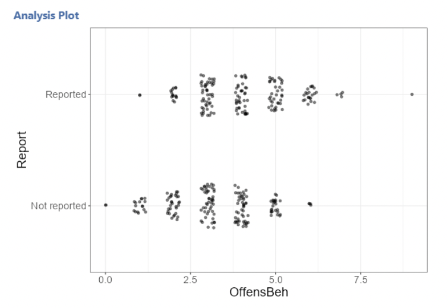
Data points are “jittered” so that they don’t fall right on top of one another.
Suppose we want to predict the value of “Report”, using “OffensBeh”.
Here is the linear regression line. In this picture, the response variable takes on the values 0 and 1, and the data are not jittered.
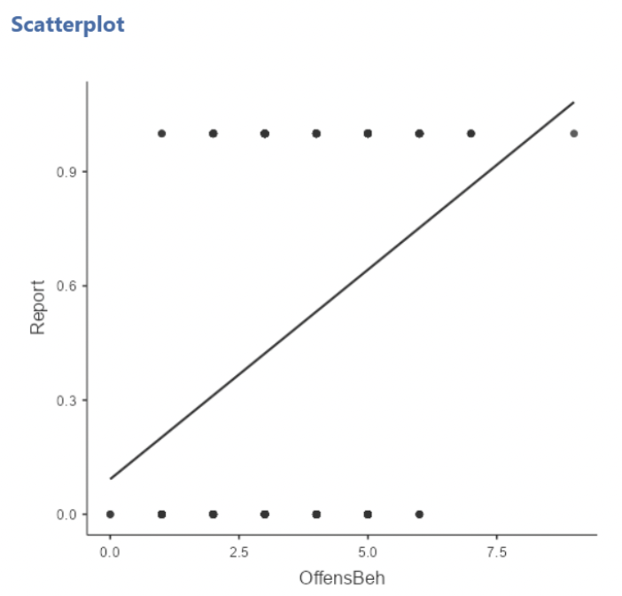
The predicted value of “Report” can be thought of as the predicted probability that Report=1 (for reported behavior)
Note that this line can go below zero and above one. We don’t want to predict probability greater than 1! A straight line is not great here. Logistic regression is an alternative to this straight line model.
6.1.1 The logistic regression model
By now we are well familiar with the linear regression model:
\[ Y_i=\beta_0+\beta_1x_{1i} + \beta_2x_{2i} + \dots + \beta_px_{pi} + \varepsilon_i \\ \varepsilon_i \sim \text{Normal}(0,\sigma^2) \]
Here is an equivalent way of writing it:
\[ Y_i \sim Normal(\mu_i, \sigma^2) \\ \mu_i=\beta_0+\beta_1x_{1i} + \beta_2x_{2i} + \dots + \beta_px_{pi} \]
In other words, the response variable is normally distributed with some mean \(\mu\), and the value of \(\mu\) is determined by the predictor (\(x\)) variables.
6.1.2 Writing a logistic regression model
We will take this approach to writing the logistic regression model.
What we want is a regression equation that looks like this:
\[ Y_i=\beta_0+\beta_1x_{1i} + \beta_2x_{2i} + \dots + \beta_px_{pi} \]
But that will work when \(Y_i\) does not follow a normal distribution.
6.1.3 The theoretical logistic regression model
Response variable \(Y\) takes on the values 0 and 1.
Denote the probability that \(Y = 1\) as \(\pi\).
This can be written \(Y\sim Bernoulli (\pi)\)
(The Bernoulli distribution is a distribution of 1’s and 0’s, where the probability of 1 is \(\pi\) and the probability of 0 is \(1 − \pi\))
We will use regression to model \(\pi\), the probability that \(Y = 1\). This is often thought of as the probability of a “success”.
If we wanted, we could use this model:
\[ Y_i\sim Bernoulli (\pi_i) \\ \pi_i=\beta_0+\beta_1x_{1i} + \beta_2x_{2i} + \dots + \beta_px_{pi} \]
The standard deviation of a Bernoulli distribution is \(\pi(1 − \pi )\). So, \(\pi\) is the only parameter for this distribution. This is different from the normal distribution, which has two parameters \(\mu\) and \(\sigma\).
6.1.4 Logit: log odds
But, as we saw in the opening example, a linear model for probability can have serious deficiencies.
So, instead of a linear model for probability \(\pi\), we’ll make a linear model for a function of \(\pi\), so that the variable on the left hand side of the equation is linearly related to the variable(s) on the right.
In logistic regression, we use the “logit” function, also known as “log odds”
\[ logit(\pi) = ln(\frac{\pi}{1-\pi}) = \textit{"log odds"} \]
Applied to our sexual harassment example, we would like to predict the probability that harassing behavior is reported. This probability is denoted \(\pi\)
Plugging this into the logit formula:
\[ logit(P(reported)) = ln(\frac{P(reported)}{1-P(reported)}) = \textit{"log odds" of reporting} \]
This will be our response variable for logistic regression. Note that this time we wrote \(P(reported)\) rather than \(\pi\); these mean the same thing.
Logit vs. probability, visually:
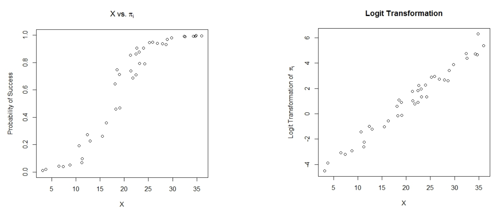
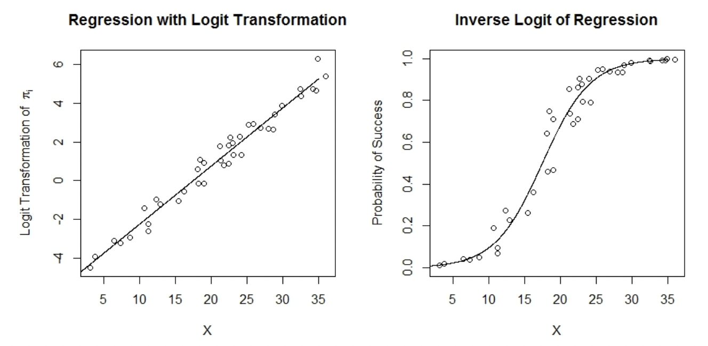
6.2 Odds
6.2.1 Odds vs. probability
To understand logistic regression, you’ll need to understand odds.
In casual English, “odds” and “probability” are often used interchangeably.
In statistics, they are not the same thing. Odds tell you how likely one outcome is compared to another.
For instance, you might hear that a football team has been given “3 to 2” odds of winning a game. This means that their probability of winning is \(\frac{3}{2}= 1.5\) times as big as their probability of losing. Or, that they’d be expected to win 3 times for every 2 times they lost.
Formally, consider some outcome A, where the probability of A occurring is written as “\(P(A)\)”. In this case,
\[ odds(A) = \frac{P(A)}{1-P(A)} = \frac{\textit{probability A occurs}}{\textit{probability A does not occur}} \]
This is the ratio of the probability A occurs to the probability A does not occur. To convert odds into probability, we use:
\[ P(A) = \frac{odds(A)}{odds(A) + 1} \]
Some probabilities and their associated odds:
| \(P(A)=\) | \(Odds(A)=\frac{P(A)}{1-P(A)}\) |
|---|---|
| 0.001 | 0.001/0.999=0.001001 |
| 0.05 | 0.05/0.95=0.0526 |
| 0.2 | 0.2/0.4=0.25 |
| 0.5 | 0.5/0.5=1 |
| 0.8 | 0.8/0.2=4 |
| 0.95 | 0.95/0.05=19 |
| 0.999 | 0.999/0.001=999 |
Think of odds(A) as “how many times will A occur for every time A does not occur?”
Sometimes we add “to 1” to an odds statement, e.g. “odds of 4 to 1” means “this outcomes occurs 4 times for every 1 time it does not occur.”
6.2.2 Back to the logistic regression model
The response variable for logistic regression, again, is:
\[ logit(\pi) = ln(\frac{\pi}{1-\pi}) = \textit{"log odds"} \]
So, the full logistic regression model is :
\[ Y_i\sim Bernoulli (\pi_i) \\ ln(\frac{\pi_i}{1-\pi_i})=\beta_0+\beta_1x_{1i} + \beta_2x_{2i} + \dots + \beta_px_{pi} \]
We are not actually interested in log odds; we only make this conversion for mathematical convenience. So, once we have \(logit(\hat{\pi}_i)\), we can \(\hat{\pi}_i\) back via the inverse logit function, \(logit^{-1}(x)=\frac{e^x}{1+e^x}\):
\[ \begin{align} logit^{-1}(logit(\pi)) \\ &= \frac{e^{logit(\pi)}}{1 + e^{logit(\pi)}} \\ &= \frac{odds}{1 + odds} \\ &= \frac{\frac{\pi}{1-\pi}}{\frac{1-\pi}{1 - \pi} + \frac{\pi}{1-\pi}} \\ &= \frac{\frac{\pi}{1-\pi}}{\frac{1}{1-\pi}} \\ &= \pi \end{align} \]
In the context of the logistic regression model:
\[ \begin{align} \hat{\pi}_i & =logit^{-1}(logit(\hat{\pi_i}))\\ &=\frac{e^{logit(\hat{\pi_i})}}{1 + e^{logit(\hat{\pi_i})}} \\ &=\frac{e^{\hat{\beta}_0 + \hat{\beta}_1x_{1i} + \hat{\beta}_2x_{2i} + \dots + \hat{\beta}_px_{pi}}}{1 + e^{\hat{\beta}_0 + \hat{\beta}_1x_{1i} + \hat{\beta}_2x_{2i} + \dots + \hat{\beta}_px_{pi}}} \end{align} \]
6.2.3 jamovi example
Applying this to the harassment data, we use Linear Models / Generalized Linear Models in jamovi and select Logistic under Categorical dependent variable.
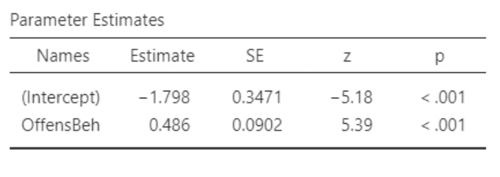
Note that “Target Level” defaults to zero. Changing it to 1 makes sense in this case; we want to predict 𝑃(𝑅𝑒𝑝𝑜𝑟𝑡𝑒𝑑).
jamovi also produces a Loglikelihood ratio test, but we will just focus on “Parameter Estimates”:
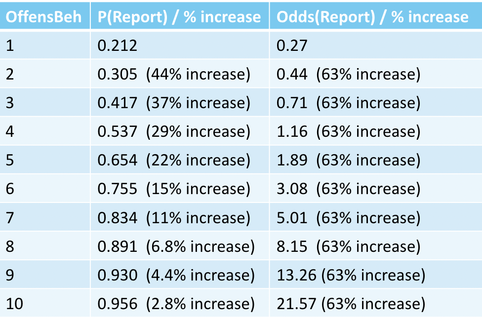
Here is our estimated model:
\[ \textit{log odds (Reported)} = -1.7976 + 0.4869*OffensBeh \]
Plugging in large and small values for OffensBeh:
\[ \textit{log odds (Reported)} = -1.7976 + 0.4869*1 = -1.3107 \] \[ \textit{log odds (Reported)} = -1.7976 + 0.4869*8 = 2.0976 \]
\[ \hat{\pi}|OffensBeh = 1: \\ \frac{e^{-1.3107}}{1 + e^{-1.3107}} = \frac{0.2696}{1.2696} = 0.21 \] \[ \hat{\pi}|OffensBeh = 8: \\ \frac{e^{-2.0976}}{1 + e^{-2.0976}} = \frac{8.1466}{9.1466} = 0.89 \]
6.3 Interpreting slope in logistic regression
The slope coefficient is directly interpreted as change in log odds for a one unit increase in the predictor. “Log odds” are not of direct interest.
Exponentiating both sides of the equation gives straight odds
\[ odds = (\frac{\pi_i}{1-\pi_i})=e^{\beta_0+\beta_1x_{1i} + \beta_2x_{2i} + \dots + \beta_px_{pi}} \]
This means that, for a one unit increase in \(X_1\), odds are multiplied by \(e^\beta_1\)
For the harassment data:
\[ \textit{log odds (Reported)} = -1.7976 + 0.4869*OffensBeh \]
\(\hat{\beta}_1 = 0.4869\). So, for a one unit increase in OffensBeh, predicted odds of reporting are multiplied by \(e^{0.4869} = 1.627\)
In other words, there is about a 63% increase in odds of reporting when OffensBeh increases by one. NOTE: odds are not probabilities!
Comparing probabilities and odds from this model:
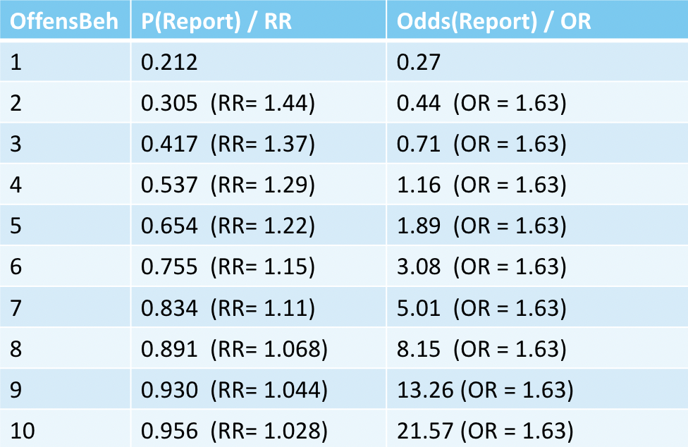
6.4 Poisson regression
We’ll now look at two other popular GLMs: Poisson (“pwa-sawn” roughly) and negative binomial.
These are used for modeling count data, which can be extended to how often a categorical variable takes on some value. Thus Poisson regression can be used to model contingency table data.
6.4.1 The Poisson distribution
The Poisson distribution is a discrete probability distribution. A Poisson distributed variable takes on only positive integer values. The integer is referred to as “count” or “# of events”.
The Poisson distribution has a single parameter, \(\lambda\) (“lambda”), which is sometimes called the “rate” parameter.
\(\lambda\) is both the mean and the variance of a Poisson distribution
The probability function for the Poisson is:
\[ P(count = k) = \frac{\lambda^k}{e^\lambda k!} \]
6.4.2 Visualizing the Poisson distribution
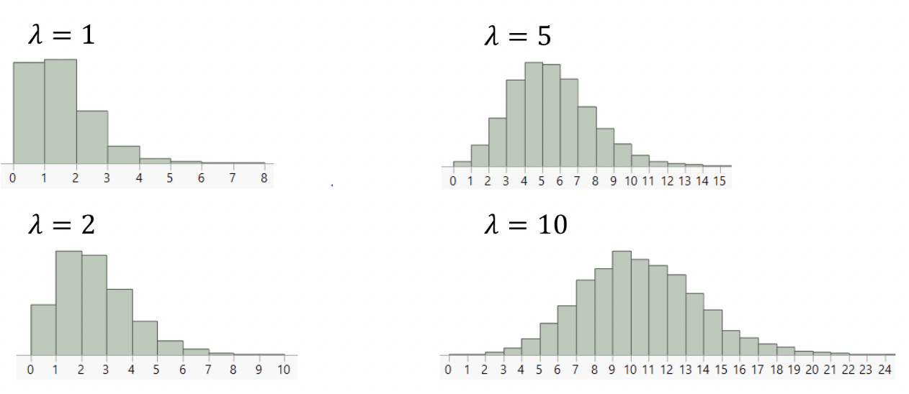
6.5 The structure of a GLM
6.5.1 The link function
In logistic regression, the response variable was $logit(\pi) = ln(\frac{\pi}{1-\pi}) $
In Poisson regression, the response variable is \(ln(\lambda)\)
The reasoning will be that the natural log allows the estimated rate to be modeled as a linear function of some predictor variables.
This is how GLMs work: they allow us to use non-normal response variables by expressing a function of their mean as a linear function of the predictors.
A GLM has three parts:
A response variable with some distribution
A “link function”, \(g(\cdot)\), that is applied to the mean of the response variable.
A linear expression of the predictor variables: \(\beta_0 + \beta_1X_1 + \beta_2X_2 \dots\)
6.5.2 GLM examples
Logistic regression uses \(Y\sim Bernoulli (\pi)\) as the response variable and \(g(\pi) = ln(\frac{\pi}{1-\pi})\) as the link function.
Poisson regression uses \(Y\sim Poisson(\lambda)\) as the response variable and \(g(\lambda) = ln(\lambda)\) as the link function.
Ordinary least squares (OLS) regression can also be considered a special case of a GLM. It uses \(Y\sim Normal (\mu, \sigma^2)\) as the response variable and the identity function, \(g(\mu) = \mu\) as the link.
6.6 Maximum likelihood estimation, conceptually
It’s worth briefly noting that the mathematical method used to come up with parameter estimates for GLMs is not “least squares”. So, we are not getting our \(\beta\)’s by minimizing sums of squared residuals.
Instead, the estimation procedure we use is called “maximum likelihood”. This method finds the values of the parameter estimates that maximize (i.e. make as large as possible for a given set of data) something called “the likelihood function”. The likelihood function takes a fixed set of data and an assumed distribution (e.g. normal), and gives the “probability of the data”, given some set of parameter values.
So, the coefficient estimates that we get in GLM output would make our data “more likely” than our data would be under any other set of possible estimates. They are the estimates that maximize the likelihood of our data.
6.7 Poisson regression example
We’ll use some General Social Survey data for this example.
Poisson is good for modeling count data, so we’ll use a response variable that takes the form of counts.
For this example, the goal will be to look at the relationship (if any) between the number of sibling a person has, and the number of children that person has.
Our question will be: do people with more siblings tend to have more children? And if so, can we quantify the relationship?
It would be wise to collect data on covariates that we expect will also be related to the number of children someone has.
An obvious one is age. Older people will have more children than younger people.
We might also want to control for “culture”. If people from different cultural backgrounds tend to have more or fewer children, then this would definitely induce a relationship between # of siblings and # of children.
There are lots of possible ways to try account for cultural background. I’m choosing rate of attending religious services.
So, the variables will be:
# of children
# of siblings
Age
Frequency of attending religious services
We’ll just look at 2018 data. The GSS lets us choose any years we want, going back to 1972.
This data set is on Canvas, as GSS_Children_Siblings.jmp
6.7.1 Poisson regression EDA
First thing to do is plot our variables.
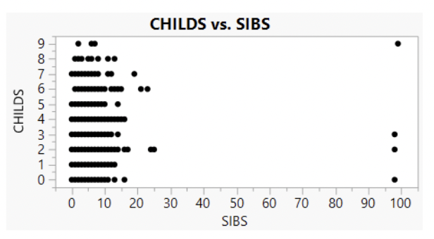
Yikes! There’s some cleaning to do. The instances of 98 siblings are not real data points.
GSS data explorer website lets us look in detail at each variable. Here is part of the coding for “SIBS”:
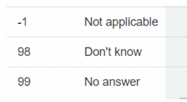
And here’s the coding for the variable CHILDS.
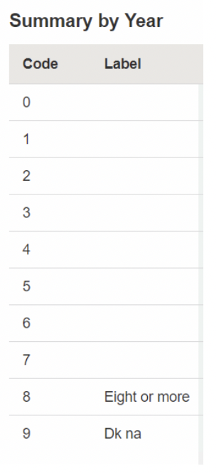
So, CHILDS = 9 is a value for missing data. These should also be excluded.
This should feel familiar – remember how messy the NLSY data was in the heights analysis?
Keep in mind that data in public databases often have idiosyncrasies like this.
Here are the row selection options that will select all rows with invalid responses.
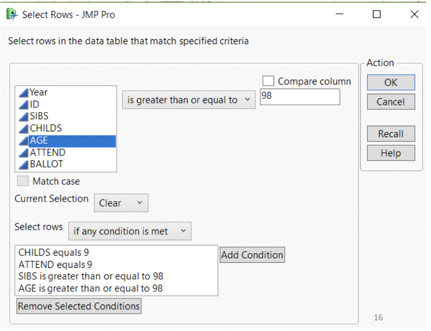
Once selected, they can be excluded.
Here is the distribution of CHILDS.
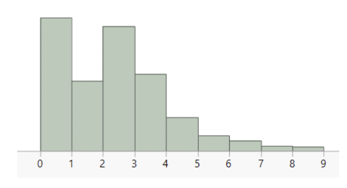
This looks a lot like a Poisson distribution. Hooray!
To run the regression, use Linear Models / Generalized Linear Models and choose Poisson(overdispersion) for Frequencies.
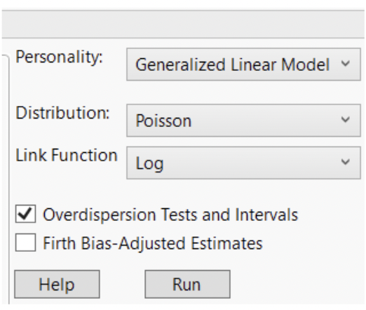
JMP will automatically choose the log link
Select the “Overdispersion tests and intervals” box
Here are results for a simple model, where # of siblings is the sole predictor of # of children. We’ll just look at the parameter estimates and the overdispersion statistic:
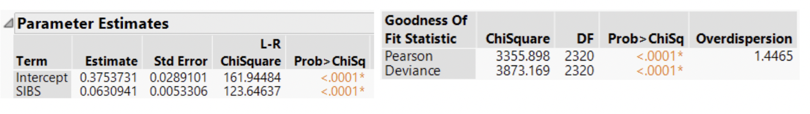
Letting \(\hat{\lambda}\) represent the predicted mean # of children, we have:
\[ ln(\hat{\lambda}) = 0.375 + 0.0631(𝑆𝐼𝐵𝑆) \]
6.7.2 Interpreting the slope
You might not be surprised to learn that, due to the log link, the exponentiated slope is interpreted as the multiplicative change in the estimated value of the response variable, given a one unit increase in the predictor variable: \(e^{0.0627} = 1.065\)
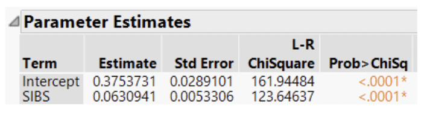
So, increasing # of siblings by one is associated with an 6.5% increase in # of children.
We can see that this is statistically significant, but it is also small.
It is also not obvious that % change is the best way to quantify this. Maybe an OLS model would have been more interpretable.
It might be more desirable to relate an additive change in siblings to an additive change in children.
Downside is that # of children is not normally distributed.
As is often the case, we are trading some interpretability for a better fitting model.
6.7.3 Overdispersion
The Poisson distribution makes a strong assumption: the mean should be equal to the variance.
Often, we observe real data in which the variance is greater than the mean.
This is referred to as “overdispersion”.
Jamovi reports an overdispersion estimate:
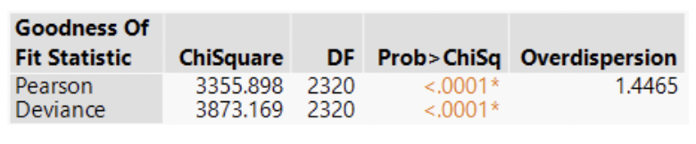
The overdispersion statistic is the ratio of the Pearson chi-square statistic to its degrees of freedom.
If mean = variance, this should be equal to 1. But it rarely is. If there is strong overdispersion, a negative binomial model should fit better.
6.7.4 Fitting a larger model
For these data, it turns out that # of siblings, age, frequency of attending religious services, and the interactions between age and the other two variables are all statistically significant and all improve model fit. Here are the parameter estimate results for this model:
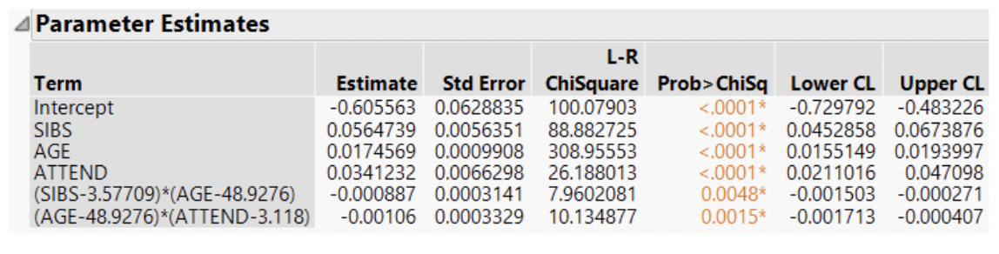
The other predictor variables and the interactions can be interpreted in the usual ways.
One thing to notice is that the estimate for SIBS has not changed much. So, while the other covariates and interactions matter, they don’t substantially change our interpretation of the SIBS predictor.
6.8 Negative binomial regression
There is also still some overdispersion, though less than there was before:
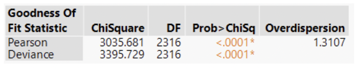
Remember that the Poisson distribution only has one parameter. This limits its flexibility.
The negative binomial distribution is similar to the Poisson distribution, but it is more flexible, and may be a better choice in the presence of overdispersion.
The negative binomial distribution is also a distribution for count data. It is interpreted as giving the number of “success” before a certain number of “failures” occur.
There are two parameters: \(p\), the probability of success, and \(r\), the number of failures at which counting stops.
If a variable \(Y\) is distributed negative binomial, we denote it:
\[ Y\sim NB(r,p) \]
The mean of the negative binomial distribution is \(\frac{rp}{1-p} = r*odds(success)\)
Example: suppose \(p = 0.8\) and \(r = 2\). We expect \(\frac{2∗0.8}{0.2} = 8\) success before we observe two failures.
Or suppose \(p= 0.5\) and \(r= 1\). We expect \(\frac{1∗0.5}{0.5} = 1\) success before we observe 1 failure.
For practical purposes, negative binomial regression will show better fit than Poisson regression in the presence of overdispersion.
The tradeoff is that the interpretation is less generally applicable. It might not make sense to think of your count variable as # of successes for a certain # of failures.
As with Poisson regression, negative binomial regression uses a GLM with a log link.
6.8.1 Negative binomial example
Here is where you select negative binomial regression in jamovi:
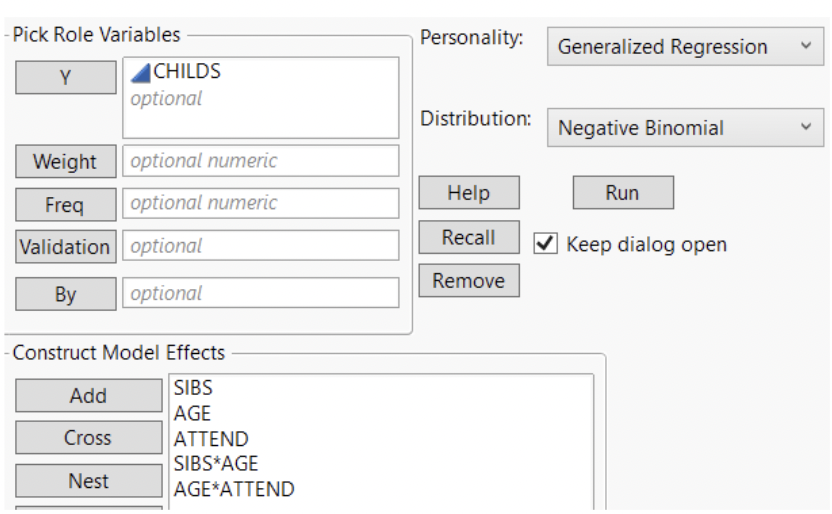
Under “Generalized Linear Models”, under “Frequencies” choose “Negative Binomial”.
6.8.2 Negative binomial results
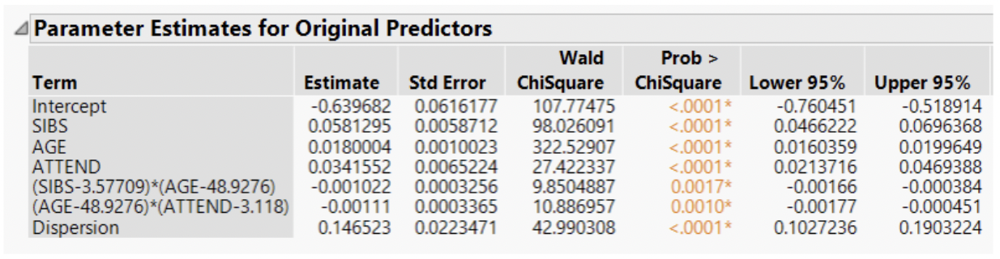
These results are awfully similar to the Poisson results.
It is often the case that different statistical methods designed for the same purpose will with similar results.